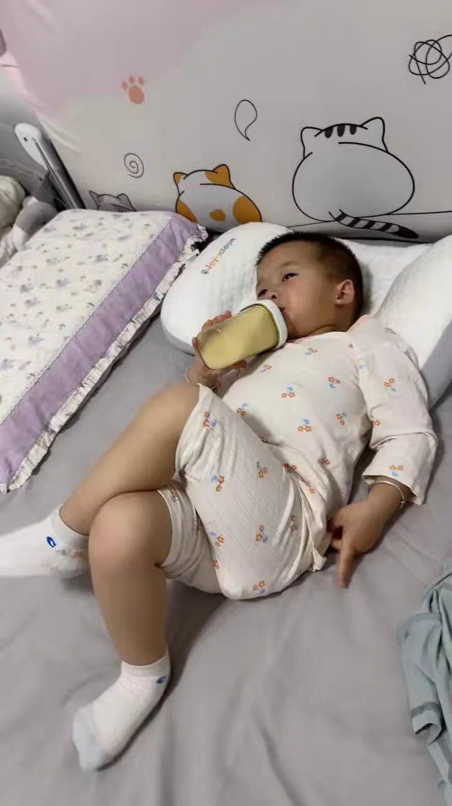

Journal · 2025-04-30
湖北省武汉市洪山区
年少之时，我不愿意被人纠缠，尤其不愿意听人指挥。我想要的，是自由，是爱干什么就干什么，就像我的外甥一样，气定神闲！
此时此刻，我也在床上躺着，翘个二郎腿，浮想联翩：以后买座山，在上面看星星；以后买个星星，送给山上看星星的人。
When I was young, I hated being pestered, and above all I hated being ordered about. All I wanted was freedom — to do exactly as I pleased, as calm and unruffled as my nephew!
And here I am now, lying in bed with one leg crossed over the other, letting my thoughts wander: someday I'll buy a mountain and watch the stars from its summit; someday I'll buy a star and give it to whoever sits up there gazing at the night sky.
Jeune, je ne supportais pas qu'on me harcèle, et surtout pas qu'on me commande. Ce que je voulais, c'était la liberté — faire exactement ce qui me chantait, serein et décontracté, tout comme mon neveu !
Et à l'instant même, me voilà allongé dans mon lit, une jambe croisée sur l'autre, laissant vagabonder mon esprit : plus tard, j'achèterai une montagne pour y observer les étoiles ; plus tard, j'achèterai une étoile, que j'offrirai à celui qui, sur la montagne, contemple le ciel.
Als ich jung war, wollte ich mich nicht bedrängen lassen und vor allem nicht herumkommandiert werden. Was ich wollte, war Freiheit — einfach tun, wozu ich Lust hatte, gelassen und seelenruhig, genau wie mein Neffe!
Und in diesem Moment liege auch ich im Bett, schlage die Beine übereinander und lasse meinen Gedanken freien Lauf: irgendwann kaufe ich einen Berg, um dort oben die Sterne zu beobachten; irgendwann kaufe ich einen Stern und schenke ihn dem, der auf dem Berg den Nachthimmel betrachtet.
